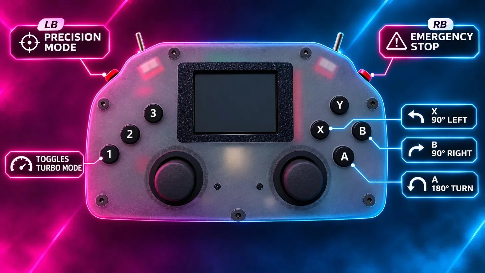

Engineering
Under the hood
The final design as it stands: structure, power and code. How we got here is in the build log.
Part 1 of 3
Mechanical
A laser-cut acrylic plate structure on aluminium standoffs keeps the frame light and the centre of mass low.
Four geared Johnson motors, two per side, drive through 6 mm shafts into set-screw hubs carrying higher-grip tyres. Two digital servos work the arm and the gripper, which is profiled around the 95 mm CORE ring.

Our own engineering
- Bolted 3D-printed motor clamps react the drive torque into the base plate, so the mounts cannot rotate under load.
- 300 RPM gearing was chosen over 600 RPM because traction, not stall torque, is the limit at this mass.
- A 180° rotating arm was rejected on stability and driver-workload grounds.
How it moves
- Differential (tank) drive: the two sides are commanded independently, for straight lines and spot turns.
- The arm sweeps a 90° envelope, from stowed to scoring height.
- The gripper toggles between two commanded positions, open and clamped.
- With the arm stowed, the sensor bar sits parallel to the mat and holds the infrared array at a constant stand-off.
Quick repair
- Set-screw hubs and bolted clamps allow a wheel or motor swap in roughly 20 minutes, with hand tools and a soldering iron.
- The infrared array is recalibrated on the venue mat before each match.

Part 2 of 3
Electrical
One 12 V lithium-ion pack feeds the HEXA Command Hub through a single main switch. The Hub drives both servos directly and commands a separate motor driver, which supplies the four drive motors.
The official NRL Hyperdrive control system, as wired on Pixel. Select the diagram to zoom and pan.
Components
| Component | Qty | Specification and role |
|---|---|---|
| Johnson geared DC motor | 4 | 12 V, 300 RPM, two per side. The left side is flipped in software. |
| Motor driver board | 1 | Takes the Hub's 6-pin JST-SH command link, drives the motors and carries the encoder port. |
| Servo | 2 | Arm and gripper: a Robokits RKI-1248 (20 kg·cm) and a Robotics Dynamix RDS-3225. |
| Infrared line array | 8 ch | Read through an 8-to-1 multiplexer on GPIO 15 and 16. |
| LSM6DSOX inertial unit | 1 | Measures turning angle over I2C. |
| HEXA Command Hub | 1 | ESP32-S3. Runs our code and the NRL link. |
| 12 V lithium-ion battery | 1 | 18650 cells, 2200 mAh. Powers everything through the main switch and charges through the DC jack. |
Power and safety
- Single-battery architecture, one pack per robot (R6.3, R6.4).
- All joints are insulated, with no exposed conductors.
- The main switch and status indicator stay accessible and visible without disassembly (R6.6, R6.8, R6.9, R8.15).
- The harness runs through the top-plate pass-through, clear of rotating parts.
- The driver station links over ESP-NOW, our only wireless link (R8.9).
Open action
No inline fuse is fitted yet. The main switch is currently the only isolation point, and over-current protection is still to do.
Troubleshooting
- Reversed driveCorrected by inverting the left-side sign in firmware.
- Array not foundThe infrared array did not enumerate. Traced to Hub firmware and resolved by reflashing.
- EncodersPlanned. They connect to the driver's dedicated port, clear of the multiplexer lines on GPIO 15 and 16.
Part 3 of 3
Software
The firmware is C++17 on the Arduino framework for the ESP32-S3, written in Visual Studio Code with PlatformIO against NRL SDK v1.5.0.
All team code lives in the opmodes directory (R8.2) and is version-controlled on GitHub. Each program is registered as an OpMode, either driver-controlled (TELEOP) or autonomous (AUTO). Every OpMode is committed, so a tuning change can be rolled back to the last run that passed.
Interfaces
- DriveDifferential commands issued through the motor driver.
- ActuatorsCommanded angular positions for the arm and gripper.
- Line array3 address lines and 1 analogue return through the multiplexer.
- Inertial unitHeading over I2C.
- EncodersPlanned.
Key algorithms
- PID steering driven by the weighted line error.
- Junction detection: the edge pair and the centre pair saturate together, confirmed by the end bar.
- A gyroscopic guard suppresses line events until roughly 60° for a quarter turn, or 150° for a reversal.
Autonomous flowchart
- Select AUTO OpMode
- INIT: motors, servos, line array. No movement.
- Auto start: clear fault, counts, route
- Leave Start boxPlanned, not yet tested
- Follow line to junctionWorks today
- Time left above park reserve?
- Yes: pick up, U-turn, drop, repeat.
No: follow line to Park box, stop.Planned, not yet tested - Any fault, emergency stop (RB) or lost link: motors stop
A blue outline works today. Dashed steps are planned and not yet tested.
Fault handling
| Trigger | Response |
|---|---|
| Line lost for 3 cycles | Latch the fault, cut drive, name it on the driver station. |
| Emergency stop pressed | Immediate drive cut (R8.15). |
| Driver-station link lost | Immediate drive cut. |
Testing and debugging
- One variable is tuned at a time, and each configuration is repeated 3 to 5 times.
- Current reliability: 3 to 4 successes in 6 to 7 runs. Gains will be logged after retuning with encoders fitted.
- Fault state, junction count and live line error are sent to the driver station.
- Inertial odometry over-read by about 1.6×, so distance now comes from taped references. The calibrated follower covered 1.88 m in 3 s and 3.11 m in 5 s.
Driver station
Every control
Select a control in the table, or a ring on the controller.

| Control | What it does |
|---|---|
| Left stick, up and down | Drive forward and backward |
| Right stick, left and right | Turn the robot |
| Right stick, up and down | Move the arm (90° to 180°) |
| LB | Precision mode: slow, fine control |
| RB | Emergency stop |
| Button 1 | Toggles turbo mode |
| A | 180° turn |
| X | 90° left |
| B | 90° right |
Why it is mapped this way
- Two sticks, no sharingTranslation and rotation stay on separate sticks, so the driver never fights one axis against another.
- Turns on face buttons90° and 180° turns are closed-loop routines, not stick work, so repeat accuracy does not depend on driver feel.
- Two speed regimesPrecision mode for scoring approaches, turbo for open-field transits.
- Stop on a shoulderThe emergency stop is reachable without a thumb leaving either stick (R8.15).
- Driver workloadOne operator runs the whole robot. The Human Player feeds the Source Zone and the Drive Strategist calls time.